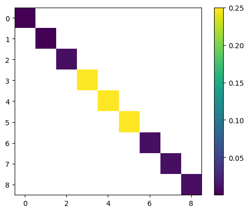

import pandas as pd
import matplotlib.pyplot as pltModel for removing weekday effects and reporting delays
mpl.rcParams[“figure.figsize”] = (20, 6)
Tuning parameter for methods
States
We consider states \(X_t = \left(\log I_{t}, W_t, \dots, W_{t - 5}, q_{1,t}, q_{2,t}, q_{3,t}\right)\) with
- \(\log I_{t + 1} = \log I_{t} + \log \rho_{t}\)
- \(\log \rho_{t + 1} = \log \rho_{t} + \varepsilon^{\rho}_{t + 1}\)
- \(M_{t + 1} = -\frac{1}{2}\sigma^{2}_{2} + \varepsilon^M_{t +1 } \sim \mathcal N (-\frac{1}{2} \sigma^{2}_M, \sigma^{2}_M)\), “muck” term (s.t. \(\mathbf E M_{t + 1} = 1\))
- \(W_{t + 1} = - \sum_{s = 0}^5 W_{t - s} + \varepsilon^W_{t + 1}\) , \(\varepsilon^W_{t + 1} \sim \mathcal N(0, \sigma^2_W)\)
- \(q_{t,\tau} = q_{t,\tau} + \varepsilon_{t + 1}^{q,\tau}\); \(\tau = 1,2,3\)
Observations are the breakdown of incidences with Meldedatum \(t\) into the delays \(\tau = 1, \dots\). Note that on date \(t\), \(Y_t\) is only partially observed: \[ Y^i_{t} \sim \operatorname{Pois} \left( p_{t,\tau}\exp \left( W_{t} + \log I_{t} + M_{t}\right)\right) = \operatorname{Pois} \left( p_{t,\tau} \exp(W_{t} M_{t}) I_{t}\right), \] for \(\tau = 1,\dots, 4\), where the parametrization is such that the first parameter is the mean, the second the overdispersion parameter.
Here \[ %p_{t,\tau} = \frac{\exp \left( q_{t,\tau} \right)}{\sum_{j = 1}^{4}\exp \left( q_{j,t} \right)}. p_{t,\tau} = \frac{\exp \left( q_{t,\tau} \right)}{1 + \sum_{j = 1}^{3}\exp \left( q_{j,t} \right)}, \] for \(\tau = 1, 2, 3\) and \[ p_{4, t} = \frac{1}{1 + \sum_{j = 1}^{3}\exp \left( q_{j,t} \right)}, \] similar as in Multinomial logistic regression.
We let \[ \begin{align*} S_{t} &= B_{t}X_{t} \\ &= \left( \log I_{t} + \log W_{t} + M_{t}, q_{1,t}, q_{2,t}, q_{3, t}\right) \end{align*} \]
Now \[ Y_{t}^\tau | S_{t} \sim \operatorname{Pois} \left( p_{t,\tau}\exp \left( \log I_{t} + \log W_{t} + M_{t} \right)\right). \] Note the following:
- \(Y_t^\tau\) depends on all signals, not just on one, however the observations are still conditionally independent
The parameter \(\theta\) of this model is \[ \theta = \left( \log \sigma^{2}_{\log \rho}, \log \sigma^{2}_{W}, \log \sigma^{2}_q , \log \sigma^{2}_{M}\right). \]
The isssm.laplace_approximation module assumes that \(y_{t,i}\) only depends on \(\theta_{t,i}\) which is not the case here. To fix this, we monkey-patch both the LA and MEIS.
Additionaly, we have to account for missing values in both methods. If \(y_t\) is missing, we transform the model to be \[ y_{t} | s_{t} ~ \delta_{s_{t}} \] and \(B_t x_t = s_t = 0\). Then \(\log p(y_{t} | s_{t}) = 0\) for all \(s_t\), with gradient \(0_{p}\) and Hessian \(0_{p \times p}\). For any initial value of \(s_t\) the LA observation is \[ z_{t} = s_{t} + \underbrace{\ddot p(y_{t}|s_{t})}_{= 0_{p \times p}}~ ^{\dagger} \underbrace{\dot p(y_{t}| s_{t})}_{= 0_{p}} = s_{t} \] with covariance matrix \[ \Omega_{t} = \ddot p(y_{t} | s_{t})^{\dagger} = 0_{p\times p}. \] which keeps \(s_t\) constant. Here \(\dagger\) indicates the Moore-Penrose generalized inverse. Thus setting \(s_{t} = 0\), this results in a GLSSM where \(y_t\) is as if it is missing.
For EIS, the pseudo-observations in the WLS are \(\log p(y_{t} | s_{t}^i) = 0\), by a similar argument. Thus the estimates are \(\hat\beta_{t} = 0_{2p + 1}\), and, taking pseudo-inverses again, we arrive at the same conclusion.
df = pd.read_csv(here() / "data/processed/RKI_4day_rt.csv")
i_start = 0
np1 = 150
data_selected = df.iloc[i_start : i_start + np1, 1:]
dates = pd.to_datetime(df.iloc[i_start : i_start + np1, 0])
y = jnp.asarray(data_selected.to_numpy())
plt.plot(dates, y)
plt.show()from isssm.importance_sampling import pgssm_importance_sampling, ess_pct
from jax import random as jrn
from ssm4epi.models.util import visualize_pgssmtheta_manual = jnp.log(
# s2_log_rho, s2_W, s2_q, s2_D
jnp.array([0.001**2, 0.1**2, 0.5**2, 0.01**2, 0.1**2])
)
# allow variance to be larger as mean
aux = (np1, 4)
pgssm = _model(theta_manual, aux)
visualize_pgssm(pgssm)
Monkey patching
from isssm.laplace_approximation import laplace_approximation
from isssm.modified_efficient_importance_sampling import (
modified_efficient_importance_sampling as MEIS,
)
key = jrn.PRNGKey(123423423)from isssm.estimation import mle_pgssm, initial_thetainitial_result = initial_theta(y, _model, theta_manual, aux, 20)
theta0 = initial_result.x
initial_result message: Optimization terminated successfully.
success: True
status: 0
fun: 5.692800563209859
x: [-8.423e+00 -7.476e+00 -4.235e+00 -3.989e+00 -4.155e-01]
nit: 54
jac: [ 2.887e-08 9.457e-08 -5.196e-07 -2.962e-07 3.264e-07]
hess_inv: [[ 2.131e+02 9.607e+00 ... -2.118e+01 1.953e-01]
[ 9.607e+00 1.806e+02 ... -1.266e+01 5.053e-02]
...
[-2.118e+01 -1.266e+01 ... 1.930e+01 1.878e-01]
[ 1.953e-01 5.053e-02 ... 1.878e-01 8.457e+00]]
nfev: 660
njev: 60# key, subkey = jrn.split(key)
# mle_result = mle_pgssm(y, _model, theta0, aux, 20, 1000, subkey)
# theta_hat = mle_result.x
# mle_result
theta_hat = theta0s_manual = jnp.exp(theta_manual / 2)
s_0 = jnp.exp(theta0 / 2)
k = theta_manual.size
plt.scatter(jnp.arange(k) - 0.2, s_manual, label="Manual")
plt.scatter(jnp.arange(k), s_0, label="Initial")
s_mle = jnp.exp(theta_hat / 2)
plt.scatter(jnp.arange(k) + 0.2, s_mle, label="MLE")
plt.xticks(jnp.arange(k), ["$\\log \\rho$", "$W$", "$q$", "D", "Wq"])
plt.legend()
plt.show()fitted_model = _model(theta0, aux)
proposal_la, _ = laplace_approximation(y, fitted_model, 100)
key, subkey = jrn.split(key)
proposal_meis, _ = MEIS(
y, fitted_model, proposal_la.z, proposal_la.Omega, 10, int(1e4), subkey
)
key, subkey = jrn.split(key)
samples_meis, log_weights_meis = pgssm_importance_sampling(
y, fitted_model, proposal_meis.z, proposal_meis.Omega, 10000, subkey
)
key, subkey = jrn.split(key)
samples_la, log_weights_la = pgssm_importance_sampling(
y, fitted_model, proposal_la.z, proposal_la.Omega, 10000, subkey
)
ess_pct(log_weights_la), ess_pct(log_weights_meis)(Array(2.48342472, dtype=float64), Array(26.44461784, dtype=float64))from isssm.importance_sampling import normalize_weights, mc_integration
from isssm.typing import GLSSM
from isssm.kalman import kalman, smoother, state_mode
from isssm.laplace_approximation import posterior_mode
from isssm.util import mm_timesignal_la = posterior_mode(proposal_la)
state_modes_meis = vmap(state_mode, (None, 0))(fitted_model, samples_meis)
x_smooth = mc_integration(state_modes_meis, log_weights_meis)
x_smooth_la = state_mode(fitted_model, signal_la)
# plt.plot(jnp.exp(x_smooth[:, 12]), label="smoothed")
# plt.plot(jnp.exp(x_smooth[:, 2:8].sum(axis=1)), label="smoothed")
# plt.plot(jnp.exp(x_smooth[:, 0]), label="smoothed")
# plt.plot(y.sum(axis=1), label="Y")
# plt.plot(jnp.exp(x_smooth[:, 1]), label="smoothed")
I_smooth = jnp.exp(x_smooth[:, 0])
I_smooth_LA = jnp.exp(x_smooth_la[:, 0])
rho_smooth = jnp.exp(x_smooth[:, 1])
rho_smooth_LA = jnp.exp(x_smooth_la[:, 1])
D_smooth = jnp.exp(x_smooth[:, 2])
D_smooth_LA = jnp.exp(x_smooth_la[:, 2])
W_smooth = jnp.exp(x_smooth[:, 3])
W_smooth_LA = jnp.exp(x_smooth_la[:, 3])
log_ratios = x_smooth[:, 9:12]
log_probs = to_log_probs(log_ratios)
fig, axs = plt.subplots(4, 2, figsize=(10, 10))
axs = axs.flatten()
fig.tight_layout()
axs[0].set_title("incidences")
axs[0].plot(dates, I_smooth, label="$I_t$")
axs[0].plot(dates, I_smooth_LA, label="$I_t$ LA")
axs[0].plot(dates, y.sum(axis=1), label="$Y_t$")
axs[0].legend()
axs[1].set_title("growth factor")
axs[1].plot(dates, rho_smooth, label="$\\log \\rho_t$")
axs[1].plot(dates, rho_smooth_LA, label="$\\log \\rho_t$ LA")
axs[2].set_title("weekday effect")
axs[2].plot(dates, W_smooth, label="$W_t$")
axs[2].plot(dates, W_smooth_LA, label="$W_t$ LA")
axs[3].set_title("delay probabilities")
axs[3].plot(dates, jnp.exp(log_probs[:, 0]), label="$p_{t, 1}$")
axs[3].plot(dates, jnp.exp(log_probs[:, 1]), label="$p_{t, 2}$")
axs[3].plot(dates, jnp.exp(log_probs[:, 2]), label="$p_{t, 3}$")
axs[3].plot(dates, jnp.exp(log_probs[:, 3]), label="$p_{t, 4}$")
axs[3].plot(dates, jnp.exp(log_probs).sum(axis=1), label="total p")
axs[3].legend()
axs[4].set_title("Log ratios")
axs[4].plot(dates, log_ratios[:, 0], label="$q_{t, 1}$")
axs[4].plot(dates, log_ratios[:, 1], label="$q_{t, 2}$")
axs[4].plot(dates, log_ratios[:, 2], label="$q_{t, 3}$")
for d in dates[::7]:
axs[4].axvline(d, color="black", alpha=0.2)
axs[5].set_title("Dirt")
axs[5].plot(dates, D_smooth)
axs[6].set_title("Weekday log_ratios")
axs[6].plot(dates, x_smooth[:, jnp.array([13, 19, 25])])
plt.show()
Christmas period model
dates.iloc[110]Timestamp('2020-07-24 00:00:00')christmas_inds = jnp.arange(75, 110)
y_nans = y.astype(jnp.float64).at[christmas_inds].set(jnp.nan)
christmas_inds = jnp.isnan(y_nans)
_, y_miss = account_for_nans(_model(theta0, aux), y_nans, christmas_inds)
_model_miss = lambda theta, aux: account_for_nans(
_model(theta, aux), y_nans, christmas_inds
)[0]
theta0_miss = initial_theta(y_miss, _model_miss, theta_manual, aux, 100)
model_miss, y_miss = account_for_nans(
_model(theta0_miss.x, aux), y_nans, christmas_inds
)
proposal_la_miss, _ = laplace_approximation(y_miss, model_miss, 100)
key, subkey = jrn.split(key)
proposal_meis_miss, _ = MEIS(
y_miss, model_miss, proposal_la_miss.z, proposal_la_miss.Omega, 10, 4000, subkey
)
key, subkey = jrn.split(key)
missing_samples, missing_log_weights = pgssm_importance_sampling(
y_miss,
model_miss,
proposal_meis_miss.z,
proposal_meis.Omega,
1000,
subkey,
)
ess_pct(missing_log_weights)Array(9.79010966, dtype=float64)ess_pct(missing_log_weights)x_smooth = (
# vmap(smooth_x)(samples_la) * normalize_weights(log_weights_la)[:, None, None]
vmap(state_mode, (None, 0))(model_miss, missing_samples)
* normalize_weights(missing_log_weights)[:, None, None]
).sum(axis=0)
# plt.plot(jnp.exp(x_smooth[:, 12]), label="smoothed")
# plt.plot(jnp.exp(x_smooth[:, 2:8].sum(axis=1)), label="smoothed")
# plt.plot(jnp.exp(x_smooth[:, 0]), label="smoothed")
# plt.plot(y.sum(axis=1), label="Y")
# plt.plot(jnp.exp(x_smooth[:, 1]), label="smoothed")
I_smooth = jnp.exp(x_smooth[:, 0])
I_smooth_LA = jnp.exp(x_smooth_la[:, 0])
rho_smooth = jnp.exp(x_smooth[:, 1])
rho_smooth_LA = jnp.exp(x_smooth_la[:, 1])
D_smooth = jnp.exp(x_smooth[:, 2])
D_smooth_LA = jnp.exp(x_smooth_la[:, 2])
W_smooth = jnp.exp(x_smooth[:, 3])
W_smooth_LA = jnp.exp(x_smooth_la[:, 3])
log_ratios = x_smooth[:, 9:12]
log_probs = to_log_probs(log_ratios)
fig, axs = plt.subplots(3, 2, figsize=(10, 10))
axs = axs.flatten()
fig.tight_layout()
axs[0].set_title("incidences")
axs[0].plot(dates, I_smooth, label="$I_t$")
axs[0].plot(dates, I_smooth_LA, label="$I_t$ LA")
axs[0].plot(dates, y.sum(axis=1), label="$Y_t$")
axs[0].legend()
axs[1].set_title("growth factor")
axs[1].plot(dates, rho_smooth, label="$\\log \\rho_t$")
axs[1].plot(dates, rho_smooth_LA, label="$\\log \\rho_t$ LA")
axs[2].set_title("weekday effect")
axs[2].plot(dates, W_smooth, label="$W_t$")
axs[2].plot(dates, W_smooth_LA, label="$W_t$ LA")
axs[3].set_title("delay probabilities")
axs[3].plot(dates, jnp.exp(log_probs[:, 0]), label="$p_{t, 1}$")
axs[3].plot(dates, jnp.exp(log_probs[:, 1]), label="$p_{t, 2}$")
axs[3].plot(dates, jnp.exp(log_probs[:, 2]), label="$p_{t, 3}$")
axs[3].plot(dates, jnp.exp(log_probs[:, 3]), label="$p_{t, 4}$")
axs[3].plot(dates, jnp.exp(log_probs).sum(axis=1), label="total p")
axs[3].legend()
axs[4].set_title("Log ratios")
axs[4].plot(dates, log_ratios[:, 0], label="$q_{t, 1}$")
axs[4].plot(dates, log_ratios[:, 1], label="$q_{t, 2}$")
axs[4].plot(dates, log_ratios[:, 2], label="$q_{t, 3}$")
for d in dates[::7]:
axs[4].axvline(d, color="black", alpha=0.2)
axs[5].set_title("Dirt")
axs[5].plot(dates, D_smooth)
plt.show()